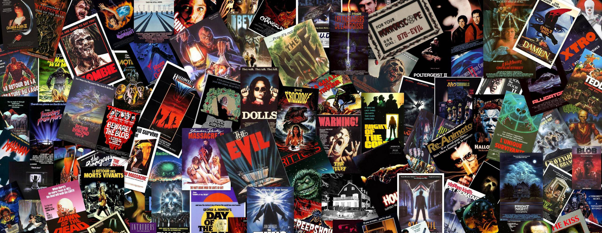
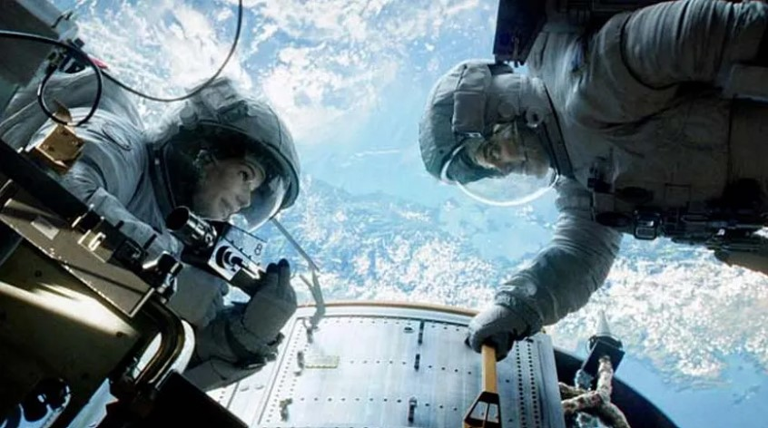

Special Effects in Movies
Movies have continually used special effects to create illusions and enhance storytelling and they have evolved significantly over time. From the early days of cinema filmmakers have experimented with different strategies to make their visions come to life on the screen. Special effects have been used in movies for over a century and they have evolved significantly over time. Early special effects have been often practical meaning that they were created using physical objects and techniques. Today digital special effects are the norm in movies. They are used to create everything from realistic explosions to fantastical creatures.
Here are 5 subtopics about special effects in movies:
What are Special Effects in movies
Special effects are techniques and technologies that create illusions or enhance visual elements in a movie. Otherwise noted as SFX, these effects can be either practical or digital, and are used to add visual interest, realism, or fantasy to a film. Practical special effects involve physical objects and techniques that are captured on camera during filming. Examples of practical effects include makeup, prosthetics, animatronics, miniatures, pyrotechnics, and more. These techniques have been used in filmmaking since its early days to create illusions such as disappearing acts, explosions, or transforming characters.
What are special effects in movies used for?
- Enhancing the appearance of characters and objects
- Creating realistic or fantastical environments
- Making impossible stunts possible
- Depicting otherworldly creatures and beings
The history of Special Effects in Movies
The history of special effects in movies can be traced back to the early days of film industry. Filmmakers began experimenting with various techniques to create illusions on screen. One of the earliest examples of practical effects and trick photography can be seen in silent films. These relied heavily on visual storytelling due to the lack of synchronized sound.
Examples of Special Effects in Early Movies
- 1) The Lost World (1925)
-
One of the earliest examples of special effects in movies is the 1925 silent film The Lost World. The movie is based totally on a unique by way of Arthur Conan Doyle and it tells the tale of a group of explorers who discover a prehistoric world in South America. The film features stop motion animation by Willis O'Brien who would later go on to create the special effects for the 1933 film King Kong.
- 2) Star Wars (1977)
-
The 1977 film Star Wars is one of the most influential movies in the history of special effects. That movie has ground-breaking special effects that raised the bar for crafting science fiction movies. We discover just how challenging it was to create things like the aerial space battles in our analysis of how Star Wars was shot. The movie's unique motion control cameras, miniatures, matte paintings, and practical effects opened the path for further developments in visual effects.
- 3) Jurassic Park (1993)
-
The 1993 film Jurassic Park is another landmark film in the history of special effects. The film was directed by Steven Spielberg and it featured groundbreaking visual effects by Industrial Light & Magic. The film featured a combination of practical and digital effects to create the illusion of living dinosaurs. The film also featured the first use of the Dinosaur Input Device (DID) which was used to control the movements of the dinosaurs.
- 4) The Matrix (1999)
-
The 1999 film The Matrix is another landmark film in the history of special effects. The sci-fi trilogy The Matrix's most astounding visual effect was "bullet time," which depicted the action in a scene slowing down while the camera moved at a normal speed. Bullet time incorporates one of the oldest special effects in movie history—time-slice photography—even though it appeared to be a digital effect. With the help of editors, the "virtual camera movement" is produced by using a bank of cameras to take a single still image.


The different types of Special Effects in Movies
Special effects are techniques used in movies to create scenes that are impossible, impractical or too expensive to film in reality. They can be divided into two main categories practical effects and digital effects.
- 1) Practical Effects
-
Practical effects involve creating illusions that are done on set, using physical objects, props, makeup, animatronics, pyrotechnics, etc. These effects are frequently used to give a scene a sense of realism or tangibleness, and they are especially useful for depicting physical items like explosions, creatures, and automobiles. By giving actors tangible objects to interact with on set, practical effects can also aid actors get into character.
- 2) Digital Effects
-
Visual effects, often abbreviated as VFX, are those that are done in post-production using computer software and digital techniques to create or enhance imagery that cannot be achieved through practical means such as fantastical creatures, futuristic technology, magical powers, etc. These effects can range from simple production of different elements to create a seamless shot, to complex simulations of physics, weather, or other natural events.
The role of Special Effects in Movies
The role of special effects in movies is to create realistic and immersive scenes that would be impossible or impractical
to film in real life production. Special effects can enhance the storytelling, the mood, and the visual appeal of a movie.
They can also aid in expressing a film's genre, place, and theme. By giving viewers a more immersive and interesting
experience, it can improve a movie's narrative and emotional impact. When used effectively, special effects may aid in
bringing a director's vision to life on screen and let viewers connect with characters and plots in fresh and exciting ways.
One way that SFX can enhance a film's narrative is by creating a sense of realism that draws viewers
into the story. For example, in Gravity (2013), the use of CGI helped to create the illusion of weightlessness and danger
in outer space.

Source: Use of CGI helped to create the illusion of weightlessness in space in Gravity (2013)
The future of Special Effects in Movies
Special effects are an essential part of movie making. They help create realistic and immersive worlds, characters and
scenes that would otherwise be impossible or too expensive to film. Movie special effects are anticipated to continue to
evolve and incorporate both practical and digital effects in the future.
One major innovation is the use of virtual reality
and augmented reality to create immersive experiences between the real and digital worlds.
Motion capture technology has also advanced significantly in recent years, allowing filmmakers to capture more
detailed performances from actors that can then be translated into stunning effects on screen.

Source: Use of Motion Capture to capture more detailed performances from actors in Avatar 2 (2023)